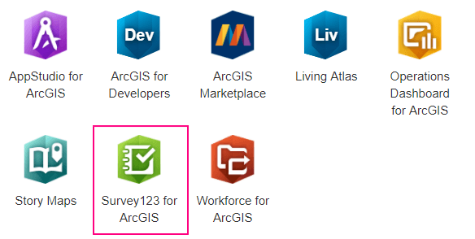
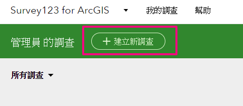
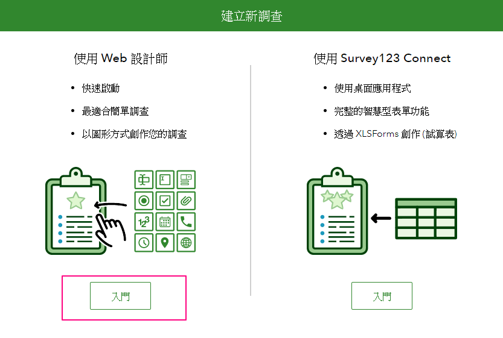
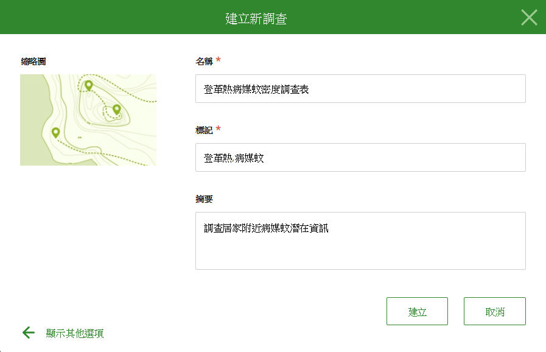
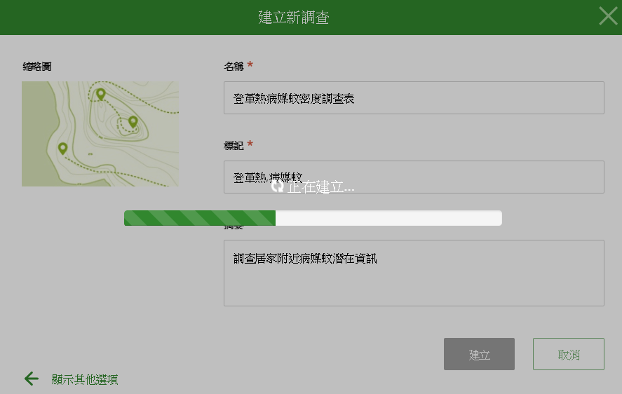
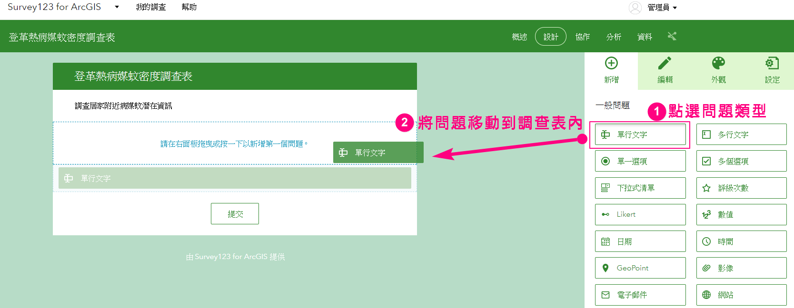
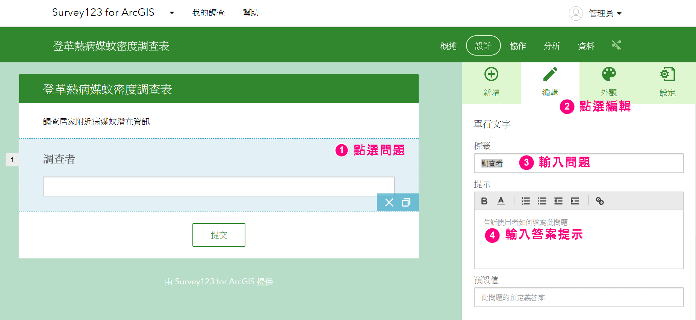
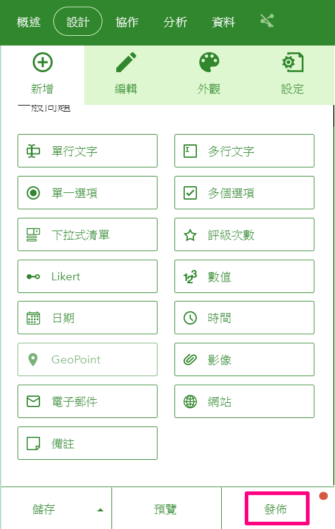

建立問卷調查表
登入ArcGIS Online
- 網址：https://www.arcgis.com
- 帳號：您的帳號
- 密碼：您的密碼
在右上方帳號旁邊，點選【應用程式】按鈕
點選【Survey123 for ArcGIS】，開啟Survey123後台管理中心

點選【+建立新調查按鈕】建立問卷
Survey123設計問卷的方式有以下兩種：
第1種是透過網頁的方式，點選問題類型，並輸入問題及提示
第2種則是透過Excel，在工作表中輸入問題類型、題目及提示
練習中，我們會使用第1種方式來建立問卷。

點選使用Web設計師側的【入門】按鈕

輸入問卷名稱、關鍵字、及摘要內容

問卷建立中，請稍後…

進到問卷設計頁面後，先點選右側的問題類型，左側問卷內容就會自動新增問題

點選左側問卷內容中的問題，右側切換【編輯】頁面，就可以輸入問卷的題目、答案提示等內容

依照下圖指示，完成本練習的問卷設計
問卷設計完成後，點選右下角的【儲存】按鈕
然後按【發佈】，將問卷轉轉成網路服務
